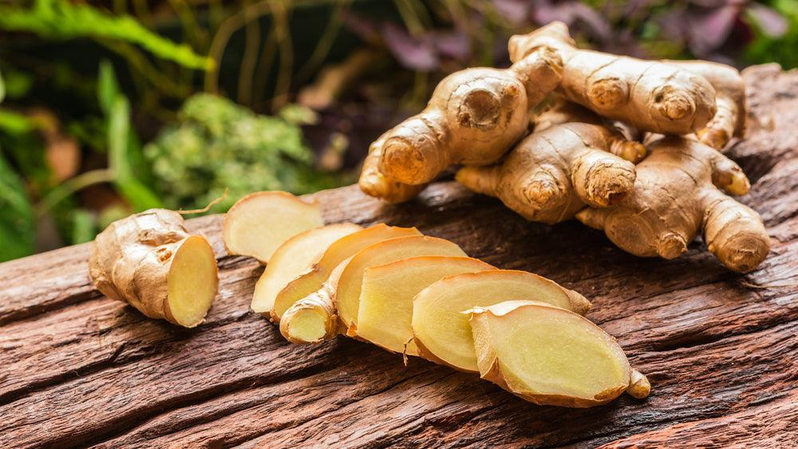
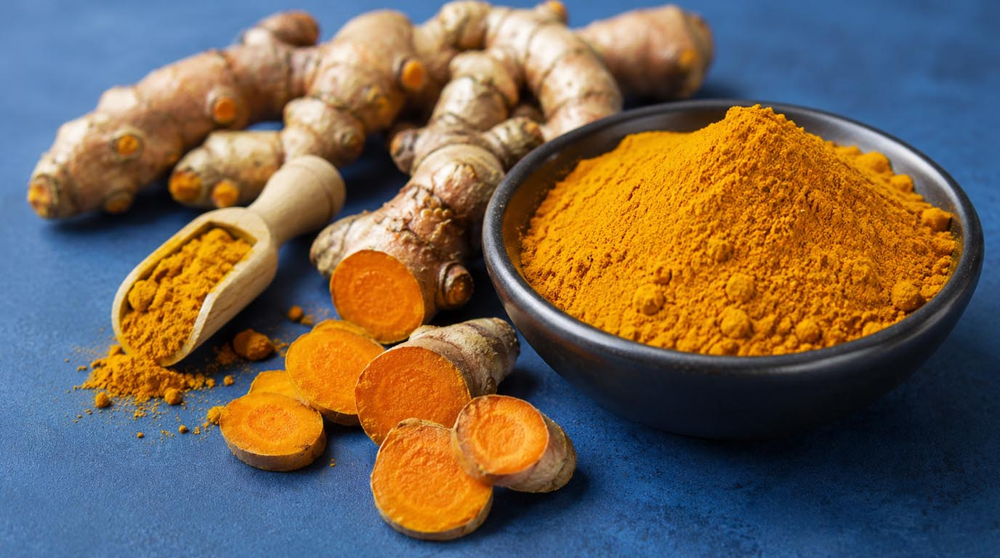
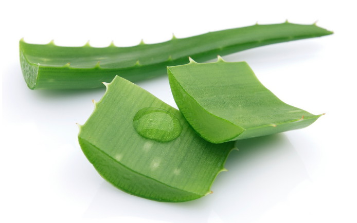
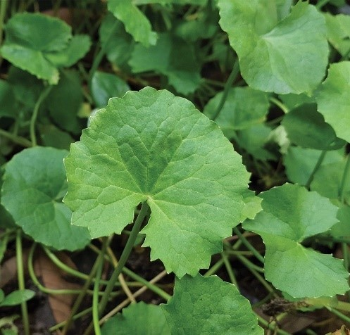
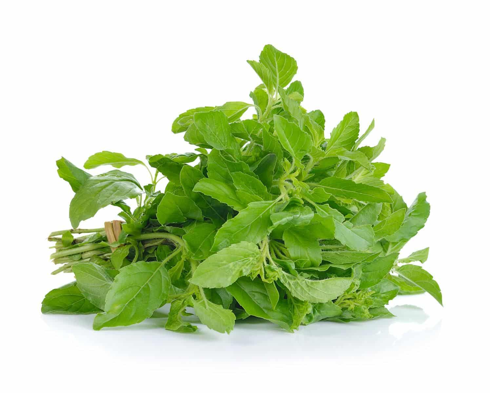
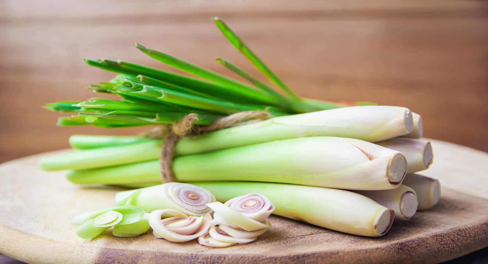
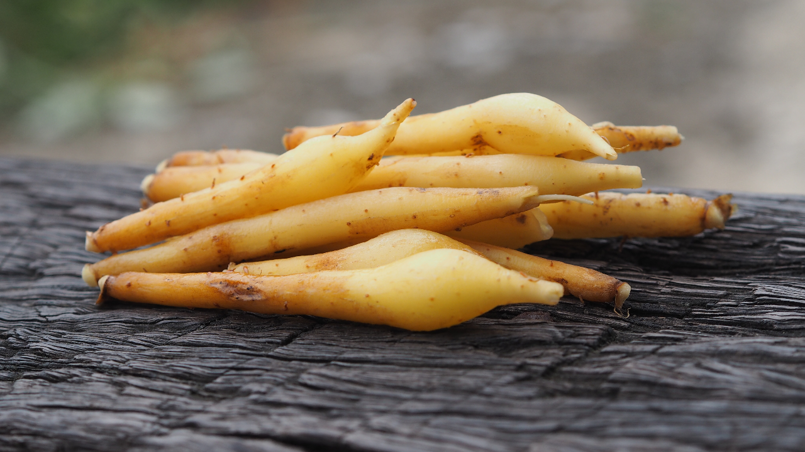
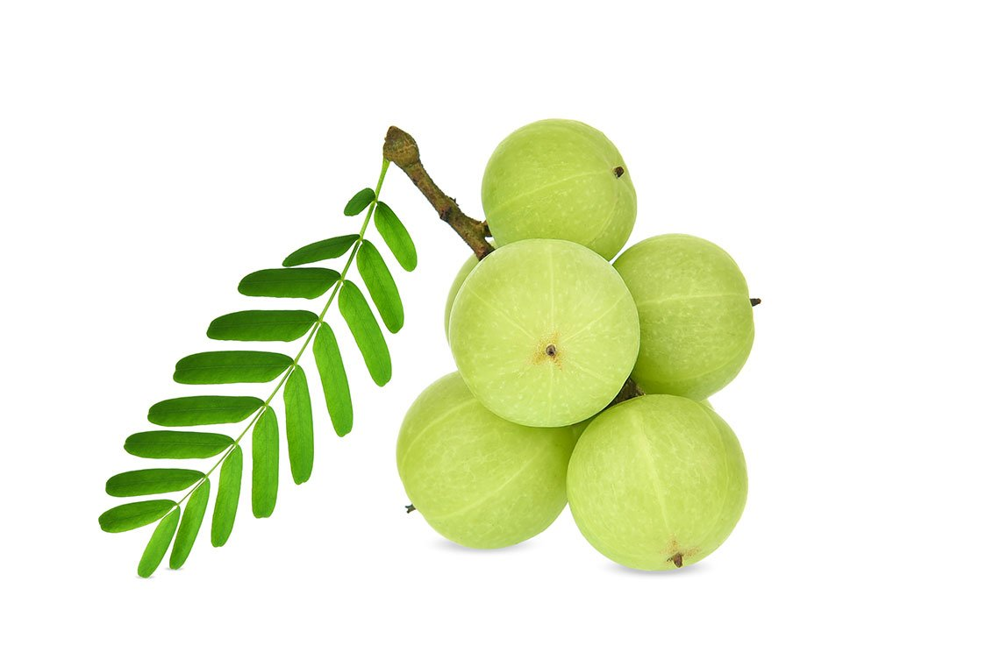
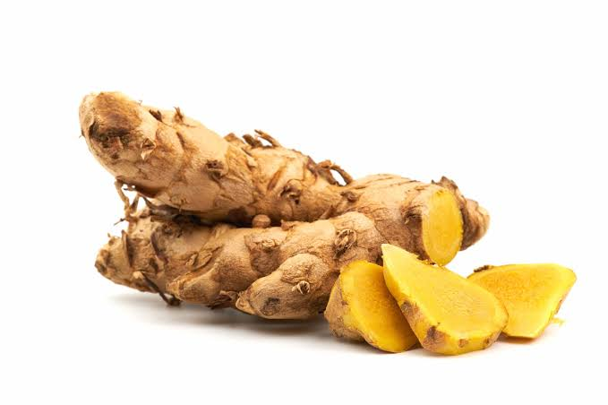
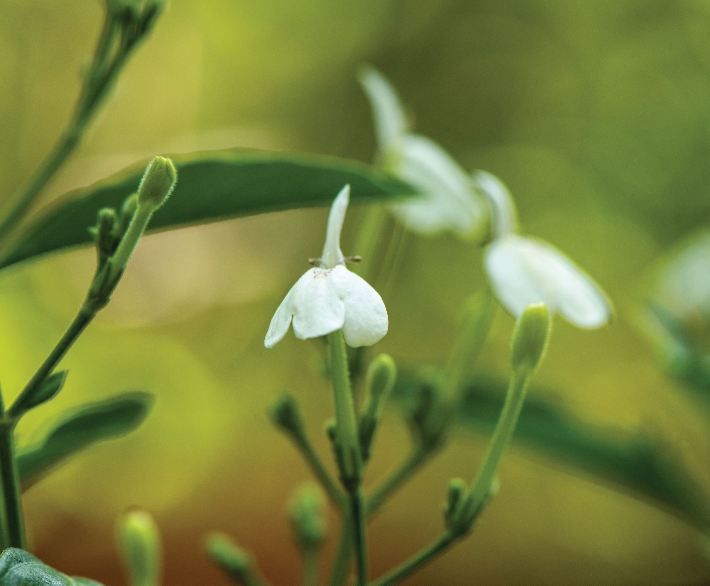

ฟ้าทะลายโจร
Fah Talai Jone / Andrographis paniculata
แก้ไข้หวัด บรรเทาอาการเจ็บคอ เสริมภูมิคุ้มกัน และต้านการอักเสบของระบบทางเดินหายใจ
แก้ไข้หวัด บรรเทาอาการเจ็บคอ เสริมภูมิคุ้มกัน และต้านการอักเสบของระบบทางเดินหายใจ

ขับลม แก้ท้องอืด ท้องเฟ้อ ช่วยย่อยอาหาร กระตุ้นการไหลเวียนเลือด และบรรเทาอาการคลื่นไส้

สมานแผลในกระเพาะอาหาร ต้านการอักเสบ บรรเทากรดไหลย้อน บำรุงผิวพรรณให้ผ่องใส

สมานแผลไฟไหม้ น้ำร้อนลวก บำรุงผิวให้ชุ่มชื้น ลดรอยแผลเป็น และปลอบประโลมผิวจากแสงแดด

แก้ร้อนใน ช้ำใน บำรุงสมองและความจำ กระตุ้นการสร้างคอลลาเจน และช่วยสมานแผลได้รวดเร็ว

ขับลม แก้อาการจุกเสียด แน่นท้อง บำรุงธาตุไฟ ลดน้ำตาลในเลือด และช่วยให้เจริญอาหาร

ขับปัสสาวะ กลิ่นหอมระเหยช่วยให้ผ่อนคลายและสดชื่น บรรเทาหวัด ขับลมในลำไส้

บำรุงกำลัง ปรับสมดุลฮอร์โมน ต้านเชื้อจุลินทรีย์ บำรุงกระดูกและข้อ สมญานามโสมไทย

วิตามินซีสูง แก้ไอ ขับเสมหะ บรรเทาอาการเจ็บคอ บำรุงเสียง และเสริมเกราะป้องกันไข้หวัด
สารแอนโทไซยานินสูง บำรุงสายตา กระตุ้นการไหลเวียนโลหิต บำรุงเส้นผมให้ดกดำเงางาม

บรรเทาอาการเคล็ดขัดยอก ฟกช้ำ ปวดเมื่อยกล้ามเนื้อ แก้อักเสบเฉพาะที่ และนิยมใช้ทำลูกประคบ

รักษาโรคผิวหนัง กลากเกลื้อน ต้านเชื้อรา ดับพิษไข้ ดับพิษโลหิต และช่วยสมานแผลผื่นคัน